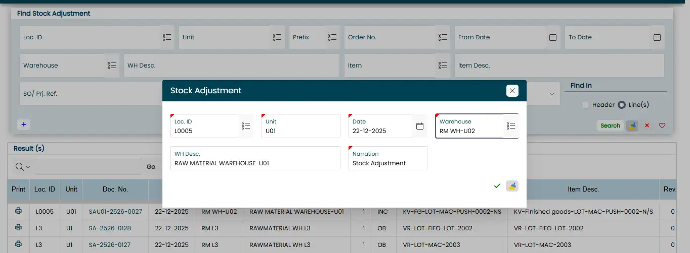
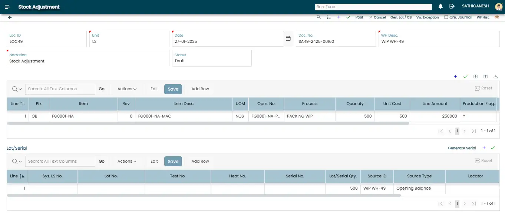
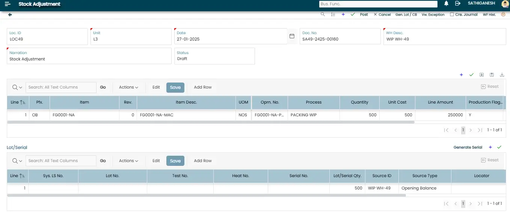
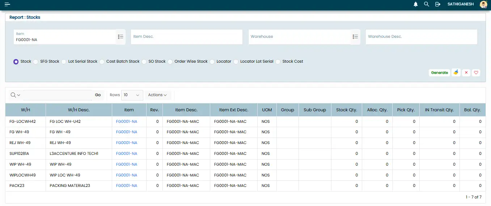

<div data-category="Inventory Control" data-title="Stock Adjustment" data-updated="January 27, 2026" data-contributors="RoadmapIT" data-breadcrumb="Home,Inventory Control,Stock Adjustment">
  <div class="page-content">
    <p>This screen is used to modify or adjust the inventory quantities in the system to reflect accurate stock levels. Stock adjustments entries are tracked and reported, providing an audit trail and helping in maintaining accurate inventory records. Adjustment entries are created after obtaining necessary approvals based on the policies</p>
    <h5>Navigation path:</h5>
    <p class="fs-6">Supply Chain Management \ Inventory \ Transaction \ Stock Adjustment</p>
    
    <ul style="list-style-type: none; align-content: center">
      <li class="mouse-icon">Search screen displays the list of Stock Adjustment with the relevant details and its status</li>
      <li class="mouse-icon">User can filter the respective documents by entering the search parameters at the header.</li>
      <li class="mouse-icon">On clicking search button, system displays the results relevant to the search parameters entered.</li>
      <li class="mouse-icon">
        Using
        
        icon, entered search parameters can be cleared.
      </li>
      <li class="mouse-icon">
        To close the screen, use
        <i class="bi bi-x fs-4 mx-2 text-danger"></i>
        icon.
      </li>
      <li class="mouse-icon">
        Click
        <i class="bi bi-plus fs-4 mx-2 text-primary"></i>
        button to create new Stock Adjustment by entering all the mandatory fields displayed in the Add dialog
      </li>
      <li class="mouse-icon">Default Loc ID .& Unit is auto populated</li>
      <li class="mouse-icon">Current date is automatically displayed and the date can be changed if needed.</li>
      <li class="mouse-icon">Select the warehouse from the list item for which the stock adjustment should be done.</li>
      <li class="mouse-icon">
        Enter Narration and click
        <i class="bi bi-check-lg fs-4 mx-1 text-success"></i>
        button to save the document, the document number will be generated for the stock adjustment.
      </li>
    </ul>
    
    <ul style="list-style-type: none; align-content: center">
      <li class="mouse-icon">
        Click
        <i class="bi bi-plus fs-4 mx-2 text-primary"></i>
        button to create the Line Item
      </li>
      <li class="mouse-icon">Enter the Prefix for the adjustment.</li>
      <li class="mouse-icon">To increase opening balance, select opening balance prefix</li>
      <li class="mouse-icon">To adjust the stock balance enter adjustment prefix</li>
      <li class="mouse-icon">Enter Item for adjusting the stock.</li>
      <li class="mouse-icon">Enter Quantity of the item to adjust the stock.</li>
      <li class="mouse-icon">Enter the Unit Cost for the item.</li>
      <li class="mouse-icon">
        Click
        <i class="bi bi-check-lg fs-4 mx-1 text-success"></i>
        button save, Line No. Will be generated
      </li>
      <li class="mouse-icon">Enter the Lot No. for adjustment if required.</li>
    </ul>
    <h2>Decrease Item quantity</h2>
    <ul style="list-style-type: none; align-content: center">
      <li class="mouse-icon">To decrease the balance of the stock, use decrement prefix set in the configuration.</li>
      <li class="mouse-icon">Select item id from LOV and enter quantity Unit cost is displayed automatically.</li>
      <li class="mouse-icon">If the Item is Lot or serial, then the details are entered (select from LOV) accordingly in Lot/serial details.</li>
      <li class="mouse-icon">Else if the item is not applicable lot/serial details are not required.</li>
    </ul>
    <h2>For Lot/Serial Item:</h2>
    <ul style="list-style-type: none; align-content: center">
      <li class="mouse-icon">If the Item selected is Lot / Serial ,the Lot Serial details are entered.</li>
      <li class="mouse-icon">Enter the Lot No. and Serial No.</li>
      <li class="mouse-icon">Enter the Serial Qty.</li>
      <li class="mouse-icon">Click on the Create Serial button, to generate lot serial details.</li>
    </ul>
    
    <ul style="list-style-type: none; align-content: center">
      <li class="mouse-icon">On clicking Post button, document is posted.</li>
      <li class="mouse-icon">The stock adjustment record can be cancelled using Cancel button in the header.</li>
      <li class="mouse-icon">The line items are cancelled using the Cancel button in Lines.</li>
      <li class="mouse-icon">
        Click on the Print
        <i class="bi bi-printer fs-5 mx-2 text-warning"></i>
        button to view Stock Adjustment the report.
      </li>
    </ul>
    
    <ul style="list-style-type: none; align-content: center">
      <li class="mouse-icon">Check for the stock qty levels In the respective warehouses in the Stocks screen</li>
    </ul>
  </div>
</div>
